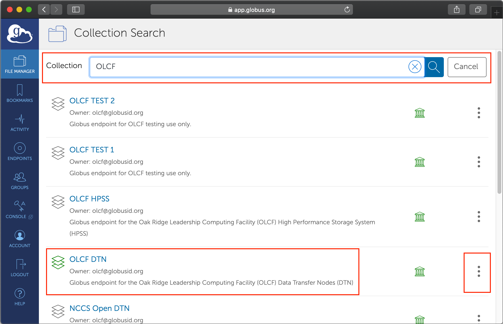

Getting Started
Please follow this guide to get started with DataFed
1. Get a Globus account
Follow only step 1 of instructions here to get a Globus account.
2. Get a Globus ID
Ensure that your globus ID is linked with your institutional ID in your globus account:
Log into globus.org
Click on
Accounton the left hand paneSelect the
Identitiestab in the window that opens upYou should see (at least these) two identities:
One from your home institution (that is listed as
primarywith a crown)Globus ID (your_username@globusid.org)
If you do not see the
Globus ID, click onLink another identity. SelectGlobus IDand link this ID.
3. Register at DataFed
Once you have a Globus ID, visit the DataFed web portal.
Click on the
Log in / Registerbutton on the top right of the page.Follow the steps to register yourself with DataFed.
Though you can log into the DataFed web portal with your institution’s credentials, you will need the username and password you set up during your registration for scripting.
Note
Your institutional credentials are not the same as your DataFed credentials. The latter is only required for using DataFed via python / CLI.
4. Get data allocations
As the name suggests, a data allocation is just the data storage space that users and projects can use to store and share data of their own. Though you can start to use DataFed at this point to view and get publicly shared data, it would not be possible to create or manipulate data of your own unless you have a data allocation in a DataFed data repository.
Users are recommended to request an allocation from the principle investigator of the project and/or the IT administrator of the facility using DataFed. Make sure to communicate your DataFed user ID with administrators or collaborators so that you can be added to projects, be provided data allocations, etc.
Note
The completion of these steps so far should be sufficient for users to view, edit, and manage data on DataFed. In order to upload and download data, users are recommended to complete the next few steps.
5. Install / identify Globus Endpoint
You will need a Globus endpoint on every machine where you intend to download / upload data.
High Performance Compute clusters
Most high performance computing clusters will already have at-least one endpoint already configured. See the table below for some popular examples:
Facility |
Machine(s) |
Endpoint |
|---|---|---|
OLCF |
Summit, Andes, JupyterHub |
|
ALCF |
Theta |
|
ALCF |
Mira, Cooley |
|
NERSC |
Cori |
|
CADES |
CADES Open Research |
|
CADES |
CADES Moderate Research |
If your cluster is not listed above, you may need to identify the endpoint(s) from the cluster’s documentation or by searching on the Globus data transfer web interface as shown below:
Log into Globus’ web portal
Select
File Manageron the left hand pane if it is not already selected.
Start typing the name of the machine or compute facility in the search box
Select the option that seems most reasonable (avoid endpoints named as
testor those that seem project specific)If the endpoint name is not clearly listed in the short description, click on the three dots signifying the options to view details about the endpoint
Scroll down the page till you find
Legacy name. This is the short-hand identifier for the endpoint
The
Endpoint UUIDcould also be used in place of theLegacy Namein the DataFed context.
Note
The DataFed web portal features a built-in endpoint search capability in the data upload and download dialogs. Simply enter a portion of an endpoint title or legacy ID in the source or destination path input field, and after a short delay DataFed will show any matching endpoints in the source or destination endpoint input list.
Personal Computers and Workstations
If you plan on using DataFed to upload and download data from your own computer, you will need to follow these instructions to install Globus Connect Personal and set up your own Globus endpoint on your computer.
Just as in the High performance computing clusters scenario,
you would need to look up information regarding your endpoint on Globus’ web portal.
You would need to note down either the Endpoint UUID or the Legacy Name for your endpoint.
6. Activate Globus Endpoint
In order to transfer from or to the Globus endpoint attached to the cluster’s file system or your personal computer, you would need to activate the Globus endpoint identified in the previous step. Just clicking on the endpoint in the Globus web portal will prompt you to authenticate yourself with the institution-specific credentials. Here are example instructions for activating CADES’ endpoints.
Note
Globus endpoints are active only for a short period of time and must be reactivated if they expire.
Once the endpoint is activated, it will be active for data transfers for a period determined by the hosting facility - typically 2 or 3 days. It is possible to renew an endpoints activation before it expires from the Globus endpoint management page. DataFed data repositories use internal Globus endpoints for data uploads and downloads; however, these endpoints are managed by DataFed and do not need to be activated by users.
Programming interfaces to DataFed
Though it is indeed possible to use the web interface exclusively for managing data in DataFed, DataFed’s python interface and CLI are very handy tools for automating data orchestration and accessing DataFed when a web interface is not available (i.e. when using a terminal).
Please follow the installation and configuration guide for the client package to get started with the python and command line interfaces to DataFed.